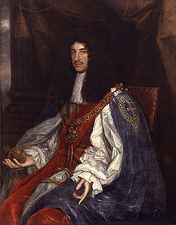

King Charles II was the King of England. He is the person the Cavalier King Charles Spaniel is named after. King Charles loved his dogs; he would go around England with a pack of them. He wrote that the spaniel should be allowed into any public place, even in the Houses of Parliament. The type of spaniel seen in the old paintings nearly became extinct because of overbreeding. They tried to get rid of the long noses. The Cavalier Spaniel is the direct descendant of the small Toy Spaniels seen in pictures from the 16th, 17th, and 18th centuries.
